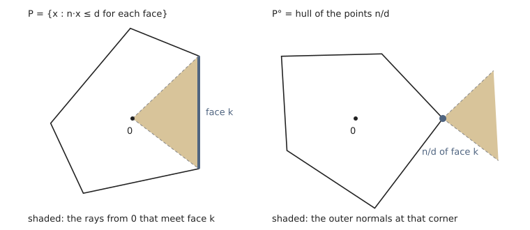
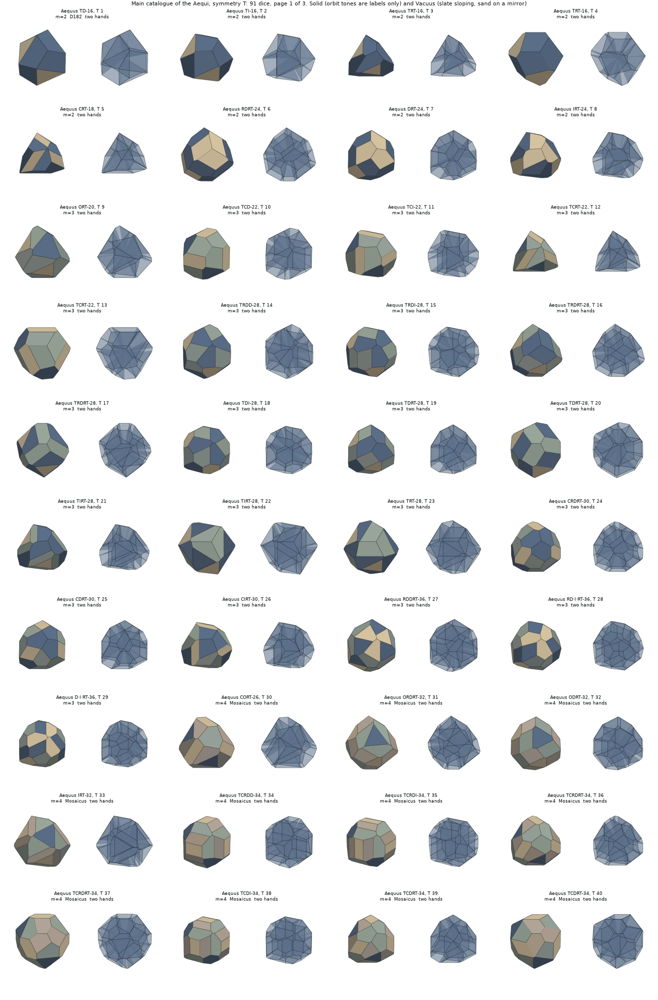

Enumerating the Innumerable
Abstract. A die is fair in the solid-angle model when every face, seen from the centre, fills the same share 4π/N of the sky. Fair dice are innumerable: every choice of face directions gives a new problem. We show that one rule covers them all. Through the polar body, the solid angle of a face is the integral Gauss curvature at the matching corner of the polar, so a fair die is Alexandrov's problem of prescribing curvature, with equal masses. Theorem A follows from Alexandrov's theorem (1942; proofs by Oliker, 2007, and Bertrand, 2016): a set of N face directions carries a fair die exactly when it satisfies Alexandrov's condition for equal masses, and the die is then unique up to scale. Its symmetry group is exactly the symmetry group of its face directions, so a group that fixes only the centre makes the centre the centroid. For equal masses the condition becomes a finite test, and it always holds when the directions come in opposite pairs. With the rule, the list becomes exact. On the symmetry axes of a cube and an icosahedron that share their three 2-fold axes, under the seven groups of these two frames, there are exactly 149 fair dice with at least two kinds of face, the Aequi of the main catalogue: Ih 4, Oh 4, Td 3, Th 47 and T 91 (each in two hands), none with symmetry exactly O or I; by number of kinds of face, 26 with two, 41 with three, and 82 Aequi Mosaici with four to seven. We number and name all 149. Related solids: with both placements of the icosahedron against the cube there are 1083 more (among them 31 = 2⁵ − 1 with symmetry O and 53 = 2⁶ − 2³ − 3 with symmetry Oh, both counts exact by Theorem A), and below the frame groups a dataset of 4553 in all.
A cube is a fair die because its symmetry carries any face to any other. Diaconis and Keller called this fair by symmetry, and showed that a die can also be fair by continuity: let one kind of face grow at the expense of another, and somewhere the chances pass through equality [1]. Rawlins makes such dice by giving every face the same solid angle from the centre [2]. Equanimity [4] found the fair member on each of the twelve lines of solids cut from two Platonic or Catalan solids on the axes of the cube and the icosahedron: twelve fair dice with two kinds of face.
With three kinds of face, or four, or with the faces off the axes, the possibilities multiply without end. How to enumerate the innumerable? Not by a longer list, but by a rule. Section 2 gives the rule: a fair die is a known problem of convex geometry in disguise, and that problem has exactly one answer, or none, for every set of face directions. Sections 3 and 4 use the rule to make one list complete: every fair die whose faces lie on the axes of one cube and one icosahedron, under the symmetry groups of these two frames. Section 5 places the related solids found the same way.
The model of a roll is the one of [2] and [4]: a face's chance is the solid angle it subtends from the centroid, divided by 4π. Solid angles are computed with Van Oosterom and Strackee's formula for a triangle [3].
A die can be turned inside out. Each face becomes a corner of a second solid, the polar, and the share of the sky that a face fills becomes how sharp that corner is. Asking for equal shares is asking for equally sharp corners, and that question was answered by Alexandrov in 1942.
Setting. Let n1, …, nN be distinct unit vectors, not all in one closed hemisphere, and d1, …, dN > 0. The solid P = {x : nk·x ≤ dk for all k} is a bounded convex polytope with the centre 0 inside. We call it a die when each nk is the outer normal of a face (no inequality is redundant). Face k subtends the solid angle Ωk: the area of the set of unit directions u whose ray from 0 leaves P through face k. The die is fair about 0 when Ωk = 4π/N for every k. Its polar is P° = {y : y·x ≤ 1 for all x in P} = conv{nk/dk}, whose corners are the points vk = nk/dk. For a convex body K with 0 inside, Alexandrov's integral Gauss curvature is the measure μK on the sphere that gives to a set ω of directions the area of all outer unit normals of K at the boundary points lying in the directions ω. For a polytope it sits at the corners: the mass at a corner is the area of its outer normals, the sphere's share of the corner.
Lemma 1 (the polar identity). Exact. For a die P with polar P°, the solid angle of face k equals the integral Gauss curvature of P° at the corner vk = nk/dk. So μP° = Σk Ωk δnk: a point mass Ωk in the direction nk of each face.
Proof. The ray from 0 in direction u leaves P where t·(nk·u) first reaches dk, that is through the face k that makes (nk·u)/dk = vk·u largest (the largest value is positive, since P is bounded). The set of u with vk·u ≥ vj·u for all j is exactly the set of outer normals of P° at its corner vk. So Ωk is the area of the normals at that corner; ties between faces fill a set of zero area. The corner vk lies in the direction nk, and edges and faces of P° carry no curvature. ∎
Figure 1 shows the identity in the plane, where solid angles become angles and the two shaded angles are equal.

Alexandrov's condition. Let σ be the uniform probability measure on the sphere and μ a probability measure on it. For a set ω of directions, ωπ/2 is the set of directions within π/2 of ω. Alexandrov's condition is: μ(ω) < σ(ωπ/2) for every nonempty spherically convex set ω other than the whole sphere. Alexandrov's theorem [6] states that a convex body with 0 inside and curvature measure 4π·μ exists if and only if the condition holds, and that it is unique up to scale about 0. We use it in the statements of Bertrand [8, Theorem 1.2, with the necessity at (3) of §1.1], which covers every Borel probability measure, finite sums of point masses included, and of Oliker [7, Theorem 1], whose Theorems 4 and 6 give the polytope case: for point masses at x1, …, xK, a polytope with its corners on the rays through the xi and those curvatures. Semenov [9] studies the discrete case as an assignment problem (abstract only read).
The rule can now be stated. It answers every set of face directions at once.
Theorem A (one fair die per set of face directions). Exact. Let n1, …, nN be distinct unit vectors, not all in one closed hemisphere, and let μ = (1/N) Σ δnk.
(a) A die with these face normals that is fair about 0 exists if and only if μ satisfies Alexandrov's condition. It is then unique up to scale about 0.
(b) Its symmetry group (the orthogonal maps carrying it onto itself) is exactly the group of orthogonal maps that permute the directions nk.
(c) If that group fixes no direction, the centroid of the die is 0, so the die is fair about its centroid.
Proof. (a) If P is such a die, then by Lemma 1 its polar has curvature 4π·μ, so the condition holds by its necessity [8]. Conversely, if it holds, Oliker's Theorems 4 and 6 [7] give a polytope Q with 0 inside, its corners rknk (rk > 0) on the given rays, and curvature 4π/N at each; every rknk is a true corner, since it carries curvature. Its polar Q° = {x : nk·x ≤ 1/rk} is a die with the normals nk, and by Lemma 1 it is fair about 0. If P and P′ are two such dice, their polars have the same curvature measure, so by the uniqueness in Alexandrov's theorem [8] P′° = λP° for some λ > 0, and P′ = P/λ.
(b) A symmetry of P about 0 carries faces to faces, so it permutes their normals. Conversely, if an orthogonal map g permutes the nk, then gP has the same normals and the same solid angles, so gP = λP by (a); the volumes are equal, so λ = 1.
(c) Every symmetry of P fixes its centroid. If the group fixes no direction, the only point it fixes is 0. ∎
For equal masses the condition reduces to a finite test on the face directions. A group of directions that lies in one open hemisphere has a spherical convex hull; let L be its perimeter (twice the length for an arc, 0 for a single point).
Proposition 2 (the condition for equal masses). Exact. For directions as in Theorem A, Alexandrov's condition for μ = (1/N) Σ δnk fails if and only if some set A of the nk lying in an open hemisphere has
g(A) = 2π(2|A| − N)/N − L(A) ≥ 0.
Only sets with more than N/2 directions can fail.
Proof. Let ω be spherically convex, nonempty and not the whole sphere, and A the set of directions in ω, so μ(ω) = |A|/N. If A is empty the inequality holds. If A lies in no open hemisphere, its hull in ω holds two opposite points, so ωπ/2 is the whole sphere less a great circle and σ(ωπ/2) = 1; and μ(ω) < 1, since ω containing all N directions would contain their positive hull, all of space. Otherwise the hull ωA of A lies in ω, with μ(ωA) = μ(ω) and (ωA)π/2 ⊆ ωπ/2, so only hulls of such A need checking (as in the study, after Bertrand's (18) [8]). The directions at least π/2 from ωA form its polar polygon, whose angles are π minus the sides of ωA; by Girard's theorem [10] its area is 2π − L(A), also for a point (a hemisphere) and an arc (a lune). So σ((ωA)π/2) = 1 − (2π − L(A))/4π, and |A|/N < 1 − (2π − L(A))/4π is g(A) < 0. As L ≥ 0, g(A) ≥ 0 needs 2|A| > N. ∎
One case needs no test at all, and it covers most of the dice below.
Corollary 3 (opposite pairs). Exact. If the face directions come in opposite pairs (n and −n), a fair die with these directions exists and is unique up to scale. This holds for every set invariant under the central inversion, so under any group containing it, among them Ih, Oh and Th.
Proof. A set A in an open hemisphere holds at most one of each pair, so |A| ≤ N/2 and Proposition 2 cannot fail. ∎
Corollary 3′ (the diameter certificate). Exact. Let M be the largest number of the directions in an open hemisphere. If for every two directions p, q that are not opposite, at angle D, either the lens of directions within D of both p and q holds at most N/2 of them, or D > π(2k − N)/N with k the smaller of that lens count and M, then Alexandrov's condition holds, and a fair die with these directions exists.
Proof. Suppose A, in an open hemisphere, has g(A) ≥ 0, and let p, q be two of its directions at the largest angle D. Every direction of A lies within D of both, so |A| ≤ k. The hull of A is a convex spherical polygon through p and q, and each of the two boundary paths between them is at least D long, so L(A) ≥ 2D. Then g(A) ≥ 0 gives 2D ≤ 2π(2|A| − N)/N, so |A| > N/2 and D ≤ π(2k − N)/N, against the hypothesis. ∎
Corollary 4 (what the search saw). Exact. (a) Under a point group G that fixes only the centre, each set of face directions that is a union of G-orbits carries at most one die fair about the centre, and when it exists, its centroid is the centre and its full symmetry group is the symmetry group of the directions, which may be larger than G. (b) Under a group that fixes a line, the fair die about the frame centre is still unique, but nothing forces its centroid to the centre.
Proof. (a) is Theorem A (a)–(c). (b) Uniqueness is Theorem A (a); part (c) needs a group that fixes no direction, and a group that fixes a line fixes every point on it. ∎
What this explains in the search. Computed. The search of study 2026-11-19-aequi-complete solved fairness on 11 622 orbit sets, each from a grid of starting points inside a box of depth ratios e±1.5. On all 6684 orbit sets of groups that fix only the centre it found exactly one die, never two and never none; Theorem A turns the "never two" from an observation in the box into a fact. On the 4938 sets of groups that fix a line (Cn, Cnv, Cs), 4619 gave a die fair about the frame centre and 319 gave none in the box. Of all the solids found, 3554 distinct ones are fair about the frame centre with their centroid elsewhere (smallest offset 6.1 × 10⁻⁵), as Corollary 4 (b) leads one to expect; the only dice found there with the centroid at the centre have a full symmetry that fixes one point, and they are counted under that group.
The 319 sets without a die in the box test the theorem directly.
Proposition 5 (the 319 polar sets). Computed (exhaustive witness test, re-checked in 50-digit arithmetic; dice confirmed to 80 digits). Of the 319 polar orbit sets for which the search found no die in its box, 87 fail Alexandrov's condition, so no fair die with these directions exists; 12 of them fail with equality, g(A) = 0 exactly, the hull's sides being exact angles (for example three sides of 60°, perimeter π, with N = 4). The other 232 satisfy it, and for each the die exists and was found without a box and confirmed to 80 digits; all lie outside the search box (largest depth ratio from 4.53 to 116.4, against e1.5 = 4.48), and none has its centroid at the centre (offset over the cube root of the volume from 0.21 to 1.02), so none is an Aequus. Controls: 50 polar sets with a known die all satisfy the condition, and the box-free solver returns the study's die in each (largest relative difference in depth 1.2 × 10⁻¹²).
Method (study 2026-11-20-aequi-alexandrov). Every set of more than N/2 directions was tested (all 319 have N ≤ 13), with the open hemisphere by a linear program and the hull perimeter from its corners; the best set was re-checked in 50-digit arithmetic from the exact frame coordinates. The die-finder minimises the convex function Φ(ψ) = ∫ log maxk (nk·u)e−ψk dσ(u) + Σ μkψk in the log-depths ψk, whose gradient is μk − Ωk/4π; this is the variational form of the problem, Oliker's functional [7, Theorem 4] and Bertrand's Kantorovich dual [8, Theorem 1.5].
Observed. In every one of the 87 failures the witness is all the directions but one (|A| = N − 1); the smallest positive margin is g = 0.0329 (C2: C6 + RD12/2 + RT24/2, N = 5). Whether every failure among frame orbit sets has this form is not proved.
The faces of the dice in this paper point along symmetry axes of a cube and an icosahedron placed together, as in Equanimity: the cube with its faces on the coordinate axes, the icosahedron with a 2-fold axis on each coordinate axis.
The frames. With φ the golden ratio, the cube frame has 26 directions: C6 (±1, 0, 0), O8 (±1, ±1, ±1) and RD12 (±1, ±1, 0), up to cyclic order; these are the face directions of the cube, the octahedron and the rhombic dodecahedron. The icosahedron with corners (0, ±φ, ±1), in cyclic order, has its 12 corners on the directions D12 (0, ±φ, ±1), the faces of the dodecahedron; its 20 faces on O8 together with I12 (0, ±1/φ, ±φ); and its 30 edges on C6 together with RT24 (±1, ±φ, ±1/φ), the faces of the rhombic triacontahedron. Together the two frames have 74 directions. The 2-fold axes of both frames are the coordinate axes, so the two share the pyritohedral group Th of order 24 and its rotations T of order 12.
The seven frame groups are Ih and I (the icosahedron's groups), Oh and O (the cube's), Td (the tetrahedron's in the cube), and the shared Th and T. Under each, an orbit of directions is admissible when it lies wholly in the frames. Ih and I have 3 admissible orbits (D12, the icosahedron's 20 and the triacontahedron's 30), Oh and O have 3 (C6, O8, RD12), Td has 4 (O8 splits into two tetrahedra, O8/4), Th has 6 (C6, O8, RD12, D12, I12, RT24) and T has 8 (O8 and RT24 split in two). Labels such as O8+I12/20 name an orbit drawn from two families (here the icosahedron's 20 faces).
Definition (as in study 2026-11-19-aequi-complete). An Aequus (plural Aequi) is a convex polyhedron S = {x : n·x ≤ dk for n in Ok, k = 1, …, m}, where each Ok is a whole orbit, under a point group, of directions along symmetry axes of the cube frame or the icosahedron frame, with one depth dk per orbit, m ≥ 2, every face present, and fair: from the centroid every face subtends 4π/N, N the number of faces. A die is listed once, under its full symmetry group, with m the number of its face orbits (its kinds of face) under that group; a die with one kind of face is fair by symmetry and is not counted.
Definition (DICTO). The main catalogue is the set of Aequi whose full symmetry group is one of the seven frame groups. The Aequi Mosaici (singular Aequus Mosaicus) are the Aequi with four or more kinds of face; a die with two or three kinds can still be read as named solids cut together.
A die whose symmetry group has no mirror and no rotary reflection (here T) comes in a left and a right hand; it is counted once, as two hands of one die. Each Aequus is named "Aequus ‹initials›-‹N›" after the solids whose faces it carries, in the order T, C, O, RD, D, I, RT (tetrahedron, cube, octahedron, rhombic dodecahedron, dodecahedron, icosahedron, rhombic triacontahedron), with its number in its group: Aequus CO-14, Oh 1 is the cube cut by the octahedron. Where the letters would run together into an unwanted word, the initials are separated by dots (D·I·RT-62, RD·I·RT-48), as in the D·I·C·T·O key. The rules for the initials are DICTO's and are listed in study 2026-11-20-aequi-catalogue: O8/4 is named T; the icosahedron's 20, or O8 and I12 both present, is named I, as in RDI-32; the triacontahedron's 30, or C6 and RT24 both present, is named RT; I12 or RT24 (or half of it) alone is named I or RT; both tetrahedra together under T are named O.
Every set of admissible orbits of the seven frame groups was tried, and each gave one fair die. Theorem A says no set can give a second, so nothing was missed: the list is complete, and its length is a number, not an estimate.
Theorem B (the main catalogue). Exact, with the existence of 94 dice computed (see below the proof). There are exactly 149 Aequi in the main catalogue: Ih 4, Oh 4, Td 3, Th 47 and T 91 (each T die in two hands), and none with symmetry exactly O or I. By number of kinds of face m they are 26 (m = 2), 41 (m = 3), 42 (m = 4), 27 (m = 5), 11 (m = 6) and 2 (m = 7): 82 Aequi Mosaici, 20 of them in Th and 62 in T.
Proof. A die whose full group G is a frame group has its faces in admissible G-orbits, so its direction set is one of the orbit sets of G with m ≥ 2. These were enumerated exactly and reduced by the frame maps that normalise G (scripts/classes.py): 4 sets for Ih, 4 for I, 4 for Oh, 4 for O, 8 for Td, 57 for Th and 153 for T, 234 in all. By Theorem A (a) each set carries at most one fair die. Each carries one: for the sets invariant under the central inversion by Corollary 3, for the others by Corollary 3′, and for every set by construction, the die found and confirmed to 80 digits (every face within 1.3 × 10⁻¹⁰⁰ of 4π/N, every corner on its planes to 10⁻¹⁰⁰). By Theorem A (b) the full group of each die is the symmetry group of its directions, and by (c) the centroid is the centre. Counting each die once under its full group gives the numbers stated (study 2026-11-19-aequi-complete, data/table-frame-groups.md). The admissible orbits of O and I are those of Oh and Ih, so by (b) every die of O or I has the mirrors too. ∎
What is proved and what is computed. The enumeration of orbit sets, uniqueness and the symmetry classification are exact. Existence is exact for the 55 dice of Ih, Oh and Th, whose directions come in opposite pairs (Corollary 3). For the 94 dice of Td and T, whose directions do not (else their group would contain the inversion), every orbit set passes the diameter certificate (Corollary 3′; computed with a smallest margin of 0.88 against rounding errors below 10⁻⁹, study 2026-11-20-aequi-existence), so existence is exact there too.
Counts that follow from Theorem A alone. Exact. Ih and Oh each have 3 admissible orbits, and every set of two or three of them has the full group (it is invariant under the full group, and no finite group of rotations and reflections contains Ih or Oh properly). So Ih and Oh have 2³ − 3 − 1 = 4 Aequi each, and their existence is Corollary 3. The four Oh dice are CO-14, CRD-18 and ORD-20 of Equanimity and CORD-26, the cube cut by the octahedron and the rhombic dodecahedron together.
Table 3 lists all 149, numbered within each symmetry group in the order Ih, Oh, Td, Th, T, and inside a group by m, then by N (DICTO's order; ties are broken by the orbit families in the order C6, O8, RD12, D12, I12, RT24, and then by which half of a split orbit is used, as set out in study 2026-11-20-aequi-catalogue). Thirteen of them are atoms of the DICTOnary [11], D179–D191: the twelve dice of Equanimity [4], and Aequus RDI-32, Th 17 (D191), the rhombic dodecahedron cut by the icosahedron with two depths (study 2026-11-19-aequus-rd-ico). The depths of all 149 to 60 digits are in the study data.
| No. | Name | m | N | Faces | D |
|---|---|---|---|---|---|
| Ih, full icosahedral symmetry: 4 dice | |||||
| Ih 1 | DI-32 | 2 | 32 | 20×6, 12×5 | D188 |
| Ih 2 | DRT-42 | 2 | 42 | 30×6, 12×5 | D189 |
| Ih 3 | IRT-50 | 2 | 50 | 30×6, 20×3 | D190 |
| Ih 4 | D·I·RT-62 | 3 | 62 | 30×4, 20×6, 12×10 | |
| Oh, full cube symmetry: 4 dice | |||||
| Oh 1 | CO-14 | 2 | 14 | 6×4, 8×6 | D180 |
| Oh 2 | CRD-18 | 2 | 18 | 6×4, 12×6 | D183 |
| Oh 3 | ORD-20 | 2 | 20 | 8×3, 12×6 | D185 |
| Oh 4 | CORD-26 | 3 | 26 | 6×8, 8×6, 12×4 | |
| Td, full tetrahedral symmetry: 3 dice | |||||
| Td 1 | TC-10 | 2 | 10 | 6×6, 4×3 | D179 |
| Td 2 | TRD-16 | 2 | 16 | 4×3, 12×5 | D181 |
| Td 3 | TCRD-22 | 3 | 22 | 6×6, 4×6, 12×5 | |
| Th, pyritohedral symmetry: 47 dice | |||||
| Th 1 | CD-18 | 2 | 18 | 6×4, 12×6 | D184 |
| Th 2 | CI-18 | 2 | 18 | 6×4, 12×6 | |
| Th 3 | OD-20 | 2 | 20 | 8×3, 12×7 | D186 |
| Th 4 | RDD-24 | 2 | 24 | 12×7, 12×4 | D187 |
| Th 5 | RDI-24 | 2 | 24 | 12×7, 12×4 | |
| Th 6 | DI-24 | 2 | 24 | 12×7, 12×4 | |
| Th 7 | ORT-32 | 2 | 32 | 8×3, 24×5 | |
| Th 8 | RDRT-36 | 2 | 36 | 12×4, 24×6 | |
| Th 9 | DRT-36 | 2 | 36 | 12×5, 24×5 | |
| Th 10 | IRT-36 | 2 | 36 | 12×3, 24×5 | |
| Th 11 | COD-26 | 3 | 26 | 6×8, 8×6, 12×4 | |
| Th 12 | CI-26 | 3 | 26 | 6×8, 8×6, 12×4 | |
| Th 13 | CRDD-30 | 3 | 30 | 6×4, 12×8, 12×4 | |
| Th 14 | CRDI-30 | 3 | 30 | 6×4, 12×8, 12×4 | |
| Th 15 | CDI-30 | 3 | 30 | 6×4, 12×8, 12×4 | |
| Th 16 | ORDD-32 | 3 | 32 | 8×6, 12×5, 12×6 | |
| Th 17 | RDI-32 | 3 | 32 | 8×6, 12×5, 12×6 | D191 |
| Th 18 | RDDI-36 | 3 | 36 | 12×8, 12×5, 12×4 | |
| Th 19 | ORT-38 | 3 | 38 | 6×4, 8×3, 24×6 | |
| Th 20 | RDRT-42 | 3 | 42 | 6×6, 12×5, 24×6 | |
| Th 21 | IRT-42 | 3 | 42 | 6×10, 12×3, 24×6 | |
| Th 22 | ORDRT-44 | 3 | 44 | 8×6, 12×6, 24×5 | |
| Th 23 | ODRT-44 | 3 | 44 | 8×6, 12×7, 24×4 | |
| Th 24 | IRT-44 | 3 | 44 | 8×3, 12×3, 24×6 | |
| Th 25 | RDDRT-48 | 3 | 48 | 12×5, 12×4, 24×6 | |
| Th 26 | RD·I·RT-48 | 3 | 48 | 12×7, 12×6, 24×5 | |
| Th 27 | D·I·RT-48 | 3 | 48 | 12×7, 12×6, 24×5 | |
| Th 28 | CORDD-38 | 4 | 38 | 6×4, 8×6, 12×6, 12×6 | |
| Th 29 | CRDI-38 | 4 | 38 | 6×4, 8×6, 12×6, 12×6 | |
| Th 30 | CDI-38 | 4 | 38 | 6×4, 8×6, 12×6, 12×6 | |
| Th 31 | CRDDI-42 | 4 | 42 | 6×4, 12×8, 12×6, 12×4 | |
| Th 32 | RDDI-44 | 4 | 44 | 8×9, 12×4, 12×5, 12×6 | |
| Th 33 | ORDRT-50 | 4 | 50 | 6×6, 8×6, 12×7, 24×5 | |
| Th 34 | ODRT-50 | 4 | 50 | 6×6, 8×6, 12×7, 24×5 | |
| Th 35 | RDDRT-54 | 4 | 54 | 6×6, 12×5, 12×4, 24×7 | |
| Th 36 | RD·I·RT-54 | 4 | 54 | 6×8, 12×6, 12×4, 24×6 | |
| Th 37 | D·I·RT-54 | 4 | 54 | 6×4, 12×8, 12×6, 24×5 | |
| Th 38 | ORDDRT-56 | 4 | 56 | 8×6, 12×7, 12×4, 24×5 | |
| Th 39 | RD·I·RT-56 | 4 | 56 | 8×6, 12×9, 12×6, 24×4 | |
| Th 40 | D·I·RT-56 | 4 | 56 | 8×6, 12×8, 12×5, 24×5 | |
| Th 41 | RD·D·I·RT-60 | 4 | 60 | 12×6, 12×5, 12×6, 24×6 | |
| Th 42 | CRDDI-50 | 5 | 50 | 6×4, 8×9, 12×4, 12×6, 12×6 | |
| Th 43 | ORDDRT-62 | 5 | 62 | 6×6, 8×9, 12×5, 12×6, 24×5 | |
| Th 44 | RD·I·RT-62 | 5 | 62 | 6×8, 8×6, 12×8, 12×4, 24×5 | |
| Th 45 | RD·D·I·RT-66 | 5 | 66 | 6×4, 12×6, 12×6, 12×6, 24×6 | |
| Th 46 | RD·D·I·RT-68 | 5 | 68 | 8×6, 12×8, 12×5, 12×6, 24×5 | |
| Th 47 | RD·D·I·RT-74 | 6 | 74 | 6×4, 8×6, 12×8, 12×6, 12×6, 24×5 | |
| T, tetrahedral rotations only (each die in two hands): 91 dice | |||||
| T 1 | TD-16 | 2 | 16 | 4×3, 12×6 | D182 |
| T 2 | TI-16 | 2 | 16 | 4×6, 12×5 | |
| T 3 | TRT-16 | 2 | 16 | 4×3, 12×6 | |
| T 4 | TRT-16 | 2 | 16 | 4×6, 12×5 | |
| T 5 | CRT-18 | 2 | 18 | 6×4, 12×6 | |
| T 6 | RDRT-24 | 2 | 24 | 12×5, 12×6 | |
| T 7 | DRT-24 | 2 | 24 | 12×6, 12×5 | |
| T 8 | IRT-24 | 2 | 24 | 12×6, 12×5 | |
| T 9 | ORT-20 | 3 | 20 | 4×3, 4×6, 12×6 | |
| T 10 | TCD-22 | 3 | 22 | 6×6, 4×6, 12×5 | |
| T 11 | TCI-22 | 3 | 22 | 6×6, 4×6, 12×5 | |
| T 12 | TCRT-22 | 3 | 22 | 6×4, 4×3, 12×7 | |
| T 13 | TCRT-22 | 3 | 22 | 6×6, 4×6, 12×5 | |
| T 14 | TRDD-28 | 3 | 28 | 4×6, 12×6, 12×5 | |
| T 15 | TRDI-28 | 3 | 28 | 4×6, 12×6, 12×5 | |
| T 16 | TRDRT-28 | 3 | 28 | 4×6, 12×6, 12×5 | |
| T 17 | TRDRT-28 | 3 | 28 | 4×3, 12×6, 12×6 | |
| T 18 | TDI-28 | 3 | 28 | 4×6, 12×6, 12×5 | |
| T 19 | TDRT-28 | 3 | 28 | 4×6, 12×6, 12×5 | |
| T 20 | TDRT-28 | 3 | 28 | 4×6, 12×5, 12×6 | |
| T 21 | TIRT-28 | 3 | 28 | 4×3, 12×6, 12×6 | |
| T 22 | TIRT-28 | 3 | 28 | 4×6, 12×5, 12×6 | |
| T 23 | TRT-28 | 3 | 28 | 4×3, 12×7, 12×5 | |
| T 24 | CRDRT-30 | 3 | 30 | 6×6, 12×6, 12×5 | |
| T 25 | CDRT-30 | 3 | 30 | 6×4, 12×6, 12×6 | |
| T 26 | CIRT-30 | 3 | 30 | 6×6, 12×4, 12×5 | |
| T 27 | RDDRT-36 | 3 | 36 | 12×6, 12×5, 12×6 | |
| T 28 | RD·I·RT-36 | 3 | 36 | 12×6, 12×5, 12×6 | |
| T 29 | D·I·RT-36 | 3 | 36 | 12×7, 12×5, 12×5 | |
| T 30 | CORT-26 | 4 | 26 | 6×6, 4×3, 4×6, 12×6 | |
| T 31 | ORDRT-32 | 4 | 32 | 4×6, 4×3, 12×7, 12×5 | |
| T 32 | ODRT-32 | 4 | 32 | 4×6, 4×6, 12×6, 12×5 | |
| T 33 | IRT-32 | 4 | 32 | 4×3, 4×6, 12×5, 12×7 | |
| T 34 | TCRDD-34 | 4 | 34 | 6×4, 4×6, 12×7, 12×5 | |
| T 35 | TCRDI-34 | 4 | 34 | 6×4, 4×6, 12×7, 12×5 | |
| T 36 | TCRDRT-34 | 4 | 34 | 6×6, 4×6, 12×7, 12×4 | |
| T 37 | TCRDRT-34 | 4 | 34 | 6×8, 4×6, 12×5, 12×5 | |
| T 38 | TCDI-34 | 4 | 34 | 6×4, 4×6, 12×7, 12×5 | |
| T 39 | TCDRT-34 | 4 | 34 | 6×4, 4×6, 12×7, 12×5 | |
| T 40 | TCDRT-34 | 4 | 34 | 6×6, 4×9, 12×4, 12×6 | |
| T 41 | TCIRT-34 | 4 | 34 | 6×6, 4×3, 12×5, 12×7 | |
| T 42 | TCIRT-34 | 4 | 34 | 6×10, 4×6, 12×4, 12×5 | |
| T 43 | TRT-34 | 4 | 34 | 6×4, 4×3, 12×7, 12×6 | |
| T 44 | TRDDI-40 | 4 | 40 | 4×9, 12×6, 12×5, 12×5 | |
| T 45 | TRDDRT-40 | 4 | 40 | 4×9, 12×6, 12×6, 12×4 | |
| T 46 | TRDDRT-40 | 4 | 40 | 4×6, 12×5, 12×6, 12×6 | |
| T 47 | T·RD·I·RT-40 | 4 | 40 | 4×6, 12×7, 12×5, 12×5 | |
| T 48 | T·RD·I·RT-40 | 4 | 40 | 4×6, 12×6, 12×6, 12×5 | |
| T 49 | TRDRT-40 | 4 | 40 | 4×6, 12×5, 12×6, 12×6 | |
| T 50 | T·D·I·RT-40 | 4 | 40 | 4×6, 12×8, 12×5, 12×4 | |
| T 51 | T·D·I·RT-40 | 4 | 40 | 4×6, 12×6, 12×6, 12×5 | |
| T 52 | TDRT-40 | 4 | 40 | 4×6, 12×7, 12×5, 12×5 | |
| T 53 | TIRT-40 | 4 | 40 | 4×3, 12×4, 12×8, 12×6 | |
| T 54 | CRDDRT-42 | 4 | 42 | 6×6, 12×6, 12×5, 12×6 | |
| T 55 | C·RD·I·RT-42 | 4 | 42 | 6×6, 12×7, 12×4, 12×6 | |
| T 56 | C·D·I·RT-42 | 4 | 42 | 6×6, 12×7, 12×4, 12×6 | |
| T 57 | RD·D·I·RT-48 | 4 | 48 | 12×7, 12×5, 12×5, 12×6 | |
| T 58 | CORDRT-38 | 5 | 38 | 6×8, 4×6, 4×6, 12×6, 12×4 | |
| T 59 | CODRT-38 | 5 | 38 | 6×4, 4×6, 4×6, 12×6, 12×6 | |
| T 60 | CIRT-38 | 5 | 38 | 6×6, 4×3, 4×6, 12×4, 12×8 | |
| T 61 | ORDDRT-44 | 5 | 44 | 4×9, 4×6, 12×5, 12×7, 12×4 | |
| T 62 | RD·I·RT-44 | 5 | 44 | 4×6, 4×6, 12×6, 12×6, 12×5 | |
| T 63 | D·I·RT-44 | 5 | 44 | 4×6, 4×6, 12×7, 12×6, 12×4 | |
| T 64 | TCRDDI-46 | 5 | 46 | 6×4, 4×9, 12×6, 12×6, 12×5 | |
| T 65 | TCRDDRT-46 | 5 | 46 | 6×6, 4×9, 12×7, 12×5, 12×4 | |
| T 66 | TCRDDRT-46 | 5 | 46 | 6×6, 4×6, 12×6, 12×5, 12×6 | |
| T 67 | T·C·RD·I·RT-46 | 5 | 46 | 6×6, 4×3, 12×7, 12×4, 12×7 | |
| T 68 | T·C·RD·I·RT-46 | 5 | 46 | 6×6, 4×6, 12×6, 12×5, 12×6 | |
| T 69 | TRDRT-46 | 5 | 46 | 6×6, 4×6, 12×6, 12×5, 12×6 | |
| T 70 | T·C·D·I·RT-46 | 5 | 46 | 6×6, 4×6, 12×8, 12×4, 12×5 | |
| T 71 | T·C·D·I·RT-46 | 5 | 46 | 6×6, 4×6, 12×6, 12×5, 12×6 | |
| T 72 | TDRT-46 | 5 | 46 | 6×6, 4×6, 12×6, 12×5, 12×6 | |
| T 73 | TIRT-46 | 5 | 46 | 6×8, 4×3, 12×3, 12×8, 12×6 | |
| T 74 | T·RD·D·I·RT-52 | 5 | 52 | 4×9, 12×7, 12×6, 12×5, 12×4 | |
| T 75 | T·RD·D·I·RT-52 | 5 | 52 | 4×9, 12×5, 12×5, 12×6, 12×6 | |
| T 76 | TRDDRT-52 | 5 | 52 | 4×6, 12×6, 12×5, 12×6, 12×6 | |
| T 77 | T·RD·I·RT-52 | 5 | 52 | 4×6, 12×8, 12×6, 12×4, 12×5 | |
| T 78 | T·D·I·RT-52 | 5 | 52 | 4×6, 12×7, 12×5, 12×5, 12×6 | |
| T 79 | C·RD·D·I·RT-54 | 5 | 54 | 6×4, 12×6, 12×7, 12×5, 12×6 | |
| T 80 | CORDDRT-50 | 6 | 50 | 6×6, 4×9, 4×6, 12×6, 12×6, 12×4 | |
| T 81 | C·RD·I·RT-50 | 6 | 50 | 6×6, 4×6, 4×6, 12×7, 12×5, 12×5 | |
| T 82 | C·D·I·RT-50 | 6 | 50 | 6×6, 4×6, 4×6, 12×7, 12×5, 12×5 | |
| T 83 | RD·D·I·RT-56 | 6 | 56 | 4×9, 4×9, 12×5, 12×6, 12×6, 12×4 | |
| T 84 | T·C·RD·D·I·RT-58 | 6 | 58 | 6×6, 4×6, 12×6, 12×7, 12×4, 12×6 | |
| T 85 | T·C·RD·D·I·RT-58 | 6 | 58 | 6×4, 4×9, 12×5, 12×6, 12×6, 12×6 | |
| T 86 | TRDDRT-58 | 6 | 58 | 6×6, 4×9, 12×5, 12×5, 12×5, 12×7 | |
| T 87 | T·RD·I·RT-58 | 6 | 58 | 6×8, 4×6, 12×7, 12×4, 12×5, 12×6 | |
| T 88 | T·D·I·RT-58 | 6 | 58 | 6×6, 4×6, 12×8, 12×5, 12×5, 12×5 | |
| T 89 | T·RD·D·I·RT-64 | 6 | 64 | 4×6, 12×7, 12×5, 12×6, 12×5, 12×6 | |
| T 90 | C·RD·D·I·RT-62 | 7 | 62 | 6×6, 4×9, 4×9, 12×5, 12×6, 12×5, 12×5 | |
| T 91 | T·RD·D·I·RT-70 | 7 | 70 | 6×4, 4×6, 12×7, 12×6, 12×6, 12×5, 12×6 | |
Figures 2 to 4 show every die of the catalogue twice: the solid, and its Vacuus, the plates from the centre to each edge [5].





The main catalogue fixes one icosahedron against the cube. A second icosahedron fits the same cube, turned a quarter turn, and some dice use the axes of both. Below the frame groups, smaller symmetry groups give many more dice. Theorem A covers all of them; this section gives their counts.
The quarter turn about a coordinate axis carries the icosahedron frame onto a second one with the same 2-fold axes: D12′ (0, ±1, ±φ), I12′ (0, ±φ, ±1/φ) and RT24′ (±φ, ±1, ±1/φ), in cyclic order. The cube's directions are unchanged, so the two placements together have 122 directions. Th and T keep both placements. The two-icosahedron dice are the Aequi whose faces use at least one orbit of each placement (study 2026-11-20-aequi-two-placements).
Proposition 6 (the two-icosahedron dice). Computed, complete in the same sense as Theorem B. Every orbit set of Th (224 sets) and T (1088 sets) that uses both placements carries exactly one fair die. They make 1083 Aequi, none congruent to any of the main catalogue or of §5.3:
| group | m=2 | 3 | 4 | 5 | 6 | 7 | 8 | 9 | 10 | 11 | total |
|---|---|---|---|---|---|---|---|---|---|---|---|
| Oh | 12 | 19 | 15 | 6 | 1 | 53 | |||||
| O (two hands) | 5 | 10 | 10 | 5 | 1 | 31 | |||||
| Td | 8 | 21 | 28 | 22 | 10 | 2 | 91 | ||||
| Th | 3 | 18 | 42 | 51 | 36 | 15 | 3 | 168 | |||
| T (two hands) | 2 | 20 | 72 | 144 | 186 | 164 | 100 | 41 | 10 | 1 | 740 |
| all | 30 | 88 | 167 | 228 | 234 | 181 | 103 | 41 | 10 | 1 | 1083 |
So 30 have two kinds of face, 88 three, and 965 are Aequi Mosaici. Every die was confirmed to 80 digits (every face within 1.4 × 10⁻¹⁰⁰ of 4π/N), and existence is exact for all 1083: by Corollary 3 for Oh and Th, and by Corollary 3′ for the 862 dice of O, Td and T. One set needed a denser search: its 257 starts found nothing, and 2049 more found one die, already met under Th with the full symmetry Oh. The searches of the groups Oh, O and Td need no separate run: their orbits are unions of T orbits. Uniqueness is Theorem A; existence is Corollary 3 for the Oh and Th dice and by construction for the others.
Two of these counts follow from the rule alone.
Proposition 7 (the O and Oh families). Exact; the existence of the 31 O dice is by construction. (a) There are exactly 2⁵ − 1 = 31 two-icosahedron dice with symmetry exactly O. (b) There are exactly 2⁶ − 2³ − 3 = 53 with symmetry exactly Oh.
Proof. On the 122 directions Oh has six orbits: C6, O8, RD12, and three that mix the placements, D12+D12′/24, I12+I12′/24 and RT24+RT24′/48. Under O the first five stay whole and the 48 split into two orbits of 24, which are mirror images (study 2026-11-20-aequi-two-placements, scripts/groups.py). (a) By Theorem A (b), a die of O has symmetry exactly O when its directions are invariant under O but not under a mirror, that is when they hold exactly one of the two orbits of 24; with it go any nonempty choice of the five other orbits, 2⁵ − 1 sets, the two choices of the 24 giving the two hands of one die. Different choices are not congruent, since a map carrying one die to another normalises O and so lies in Oh, which keeps each orbit. (b) A set of Oh orbits with m ≥ 2 has symmetry exactly Oh and a fair die by Corollary 3. There are 2⁶ − 1 − 6 sets with m ≥ 2, of which the 2³ − 1 − 3 = 4 without a mixing orbit are the Oh dice of the main catalogue; that leaves 53. ∎
The search found 31 and 53, as it must.
Observed. The die Th: O8 + D12 + RT24′ of §5.1 and the die Th: O8 + I12 + RT24 of the main catalogue (Aequus IRT-44, Th 24) have the same ratio of the RT24 depth to the O8 depth, 1.02140047185008282050793373959299607810, equal in all 38 digits compared. In both, the 8 triangles of O8 meet only the planes of one 24-orbit, so the fairness of those 8 faces alone fixes that one ratio, whatever the third orbit is. How many of the dice are fixed orbit by orbit in this way has not been counted; we record it as a lead only.
Computed. Crossing every subgroup of Oh and Ih on the 74 directions of one placement (DICTO: "cross all possible symmetry groups, see what falls out") gives 4553 Aequi in all, the 149 of the main catalogue among them, and 4404 whose full group is smaller (the largest classes: C2h 888, D2 857, D2h 848, S6 694). They are complete for every subgroup class with one fixed point and at most 8 orbits, and capped at three or four kinds of face for the rest; the counts by group and m, the caps and every die with its depths to 60 digits are in study 2026-11-19-aequi-complete (data/counts.md, data/table.csv), and every one is confirmed to 80 digits (every face within 6.9 × 10⁻¹⁰⁰ of 4π/N). Six of them are prisms (triangular, pentagonal, hexagonal, octagonal, decagonal, and a 12-sided prism with sides not evenly spaced), whose symmetry reaches beyond the frames; fair prisms are known in idea, by Diaconis and Keller's continuity argument [1] and Goucher's fair triangular prism [12].
Seven of the 149 have faces only on the planes {100}, {111} and {110} of the cubic lattice: CO-14, CRD-18, ORD-20 and CORD-26 (Oh 1–4) and TC-10, TRD-16 and TCRD-22 (Td 1–3). Their combinations of cube, octahedron, rhombic dodecahedron and tetrahedron faces are familiar crystal forms. The other 142 each have a face direction with φ in it, along an axis of the dodecahedron, the icosahedron or the rhombic triacontahedron. No lattice plane has such a direction, as no lattice has 5-fold symmetry, so these cannot be the faces of an ordinary crystal; the pyritohedron of pyrite has faces {210}, not those of the dodecahedron. Icosahedral quasicrystals [13] do grow with such faces: AlCuLi single quasicrystals solidify as rhombic triacontahedra [14]. The fairness of an Aequus is not a law of crystal growth, though: a crystal's face depths are set by its surface energies through Wulff's construction [15], not by equal solid angles (open question 7).
A fair die is a known problem in disguise: turned inside out, it asks for a solid with equally sharp corners in given directions, and Alexandrov's theorem says when such a solid exists and that it is then the only one. That is the rule (Theorem A). For equal masses it becomes a finite test, which always passes when the face directions come in opposite pairs. The rule makes the count of fair dice on the axes of the cube and the icosahedron exact: 149 Aequi in the main catalogue, numbered and named here, with 1083 more using both placements of the icosahedron and a dataset of 4553 below the frame groups. Innumerable in general, the fair dice are enumerable as soon as their face directions are chosen, one die or none for each choice.
Known and used. Alexandrov's theorem on integral Gauss curvature, existence, necessity and uniqueness (Aleksandrov [6], as stated by Oliker [7] and Bertrand [8]); the polytope case (Oliker [7, Theorems 4 and 6]); the variational form (Oliker's functional [7] and Bertrand's Kantorovich dual [8]); polar duality of convex polytopes; Girard's theorem [10]; fairness by symmetry and by continuity (Diaconis and Keller [1]); the equal-solid-angle rule (Rawlins [2]); the solid angle of a triangle (Van Oosterom and Strackee [3]); the twelve fair dice of the axis lines (Equanimity [4]); the Vacuus [5]; the Platonic solids and Catalan's rhombic dodecahedron and rhombic triacontahedron.
Claimed here, not found in the sources checked. The reading of a fair die as Alexandrov's problem for the polar (Lemma 1 and Theorem A as stated, with (b) and (c)); the finite test for equal masses (Proposition 2) and the existence for opposite pairs (Corollary 3); the verdicts on the 319 polar sets (Proposition 5); the complete count of 149 and the numbered catalogue (Theorem B, Table 3); the 1083 two-icosahedron dice and the counts 31 and 53 (Propositions 6 and 7); the 4553 below the frame groups.
Sources checked. From Equanimity [4], 18 November 2026: Diaconis and Keller [1], read in full; Rawlins [2], read (claims and examples); Riemer, Stoyan and Obreschkow, arXiv:1302.3925, and Yong and Mahadevan, arXiv:1008.4559, abstracts; the full text of the 348 papers of our reference library, searched for "fair dice", "14-sided", "14-face" and tan(π/14); a web search for fair dice by equal solid angles on truncated polyhedra, which found Rawlins's patent, The Dice Lab's design page, M. Dominus's blog (2007) and Goucher's "Fair dice" [12] (a fair triangular prism and the pseudo-deltoidal icositetrahedron); OEIS, for the digits of the 14-face die. On 20 November 2026, for dice and for the link to Alexandrov's problem: McCooey's Visual Polyhedra catalogue (dmccooey.com/polyhedra), all 47 sections, with no section on dice or equal solid angles; Michon's Numericana page on dice (numericana.com), which treats dice with equal solid angles, with examples of 5 and 10 faces; Sherman's fair-dice page (loki3.com, 2010–2012), on isohedra and grouped faces, without solid angles; Taniguchi and Uehara, "Design schemes for fair dice", arXiv:1810.12108 (2018), title and abstract; Irving and Patel (Oxford), on fair dice, title and abstract; Oliker [7], read in full (Theorems 1, 4 and 6 and the abstract); Bertrand [8], read in full (Theorems 1.2 and 1.5, §1.1, §1.3 and §3); Semenov [9], abstract only. Not read: Aleksandrov's note [6]. None of the dice sources gives a die cut from two or more solids or an enumeration by symmetry group. In the parts read, none of the sources links fair dice to Alexandrov's problem: the dice sources do not use it, and the papers on Alexandrov's problem treat prescribed curvature in general.
DICTO · dictospheres.com